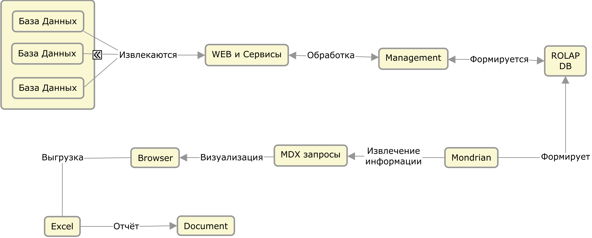

Существующие платформы бизнес аналитики
Бизнес аналитика Business Intelligence - методы, технологии и средства извлечения и представления данных. BI-продукты делятся на два типа: генераторы запросов и отчетов и развитые аналитические OLAP-инструменты.
Реализация платформы бизнес аналитики на базе компонент системных сервисов, ROLAP, мондриана, MDX запоров и стандартными средствами визуализации:
Системные сервисы позволяют извлечь данные из БД с последующей обработкой и записывать в хранилище с определенной структурой, которая формируется согласно конфигурации Mondrian с использованием OLAP-сервера. Затем с помощью MDX запросов извлекается необходимая информация и с помощью стандартных средств осуществляется визуализация данных с последующей выгрузкой для хранения.
Одними из наиболее известных BI-решений с открытым исходным кодом являются продукты Pentaho BI Suite от Pentaho Corporation и Jaspersoft BI Suite от компании Jaspersoft. Продукт Pentaho состоит из отдельных модулейкомпонентов, которые вместе формируют Pentaho BI Platform.
Pentaho BI – пакет ориентированный более на работу с OLAP, и в частности, с OLAP движком Mondrian.
Модуль CDF работает на базе Pentaho являясь графической надстройкой на нем. Позволяет создавать несколько различных видов диаграмм. Возможно только создание готовых решений администратором и затем пользователь сможет выбрать только из этих готовых решений.
Saiku – самая подходящая альтернатива собственной системе. Многие идеи были взяты из Saiku. Интерфейс понятен для пользователя, технические детали отсутствуют, но так как система не автономна и в ее работе участвуют несколько различных модулей (Mondrian, например), то добиться слаженной работы этих модулей оказалось затруднительно.
Jaspersoft в плане поддержки и работы с OLAP почти ничем не отличается от Pentaho и недостатки там точно такие же.